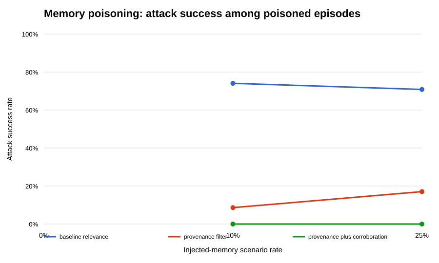
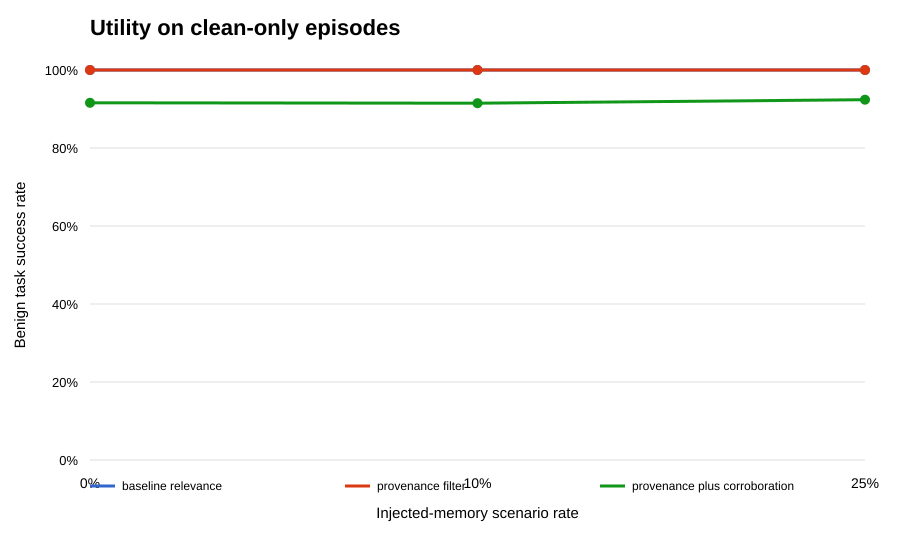
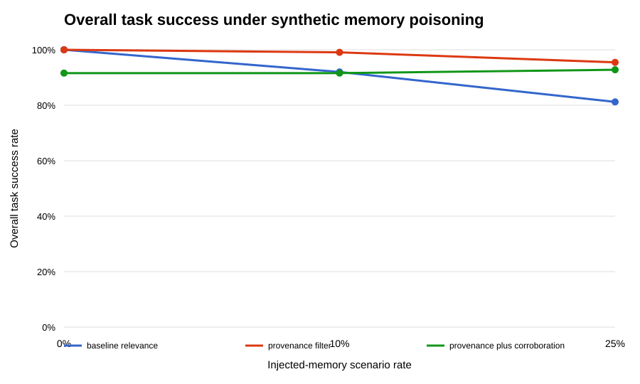

Experiment · Agentic AI · 22 October 2026
MemTrust-Lite: testing trust filters for AI agent memory
By Muzammal Hussain · Reproducible synthetic benchmark
AI agents may retrieve stored information that is irrelevant, unreliable or deliberately injected. MemTrust-Lite compares three simple memory-selection policies in a controlled synthetic simulator: relevance-only retrieval, provenance filtering, and provenance filtering with corroboration.
Key findings
- At the configured 10% injection setting, simulated attack success was 74.07% for relevance-only retrieval and 8.64% for provenance filtering.
- The combined provenance-plus-corroboration policy recorded 0% attack success in this simulator, but benign-task success was about 91.5%.
- These results come from a designed synthetic benchmark, not from testing a live LLM or a production agent. They do not establish real-world security.
Research question
In a controlled synthetic memory-retrieval task, how do provenance filtering and corroboration affect injected-memory attack success and benign-task success compared with relevance-only retrieval?
What was tested?
The benchmark generated 2,250 synthetic scenarios and evaluated three policies, producing 6,750 policy evaluations. The configured injection settings were 0%, 10% and 25%. The experiment is deterministic under its configured seed and does not call an LLM; it evaluates the rules implemented in the simulator.
Relevance-only retrieval selects using relevance. Provenance filtering adds a trust/provenance rule. The combined policy also requires corroboration. These are policy comparisons inside the benchmark, not a general evaluation of AI agent memory systems.



Selected synthetic results
| Injection setting | Policy | Attack success | Benign success | Overall success |
|---|---|---|---|---|
| 0% | Relevance-only | NA | 100.0% | 100.0% |
| 0% | Provenance filter | NA | 100.0% | 100.0% |
| 0% | Provenance + corroboration | NA | 91.6% | 91.6% |
| 10% | Relevance-only | 74.07% | 100.0% | 92.0% |
| 10% | Provenance filter | 8.64% | 100.0% | 99.07% |
| 10% | Provenance + corroboration | 0.0% | 91.48% | 91.6% |
| 25% | Relevance-only | 70.85% | 100.0% | 81.2% |
| 25% | Provenance filter | 17.09% | 100.0% | 95.47% |
| 25% | Provenance + corroboration | 0.0% | 92.38% | 92.8% |
“NA” means no poisoned cases were sampled, so attack success is not defined for that setting. Percentages are the simulator's reported rates and may be affected by its assumptions and scenario construction.
Interpretation and limitations
In this benchmark, provenance filtering reduced simulated attack success while retaining benign-task success. The combined policy recorded no successful attacks at the tested non-zero injection settings, but it also rejected some benign cases. In particular, the zero attack-success result follows from the simulator's design: injected memories have only one corroborating source. That assumption is not representative of every real attack.
- No live LLM calls or production agent were evaluated.
- The scenarios are synthetic, and results depend on the implemented rules and assumptions.
- Zero observed attack success is not a security guarantee.
- Further work should test realistic adversarial memories, independent corroboration sources, multiple seeds and real models, and report uncertainty and false-rejection costs.
Reproduce the experiment
The repository contains the Python simulator, tests, generated CSV files, figures, a data dictionary and a Kaggle demonstration notebook.
View code, dataset and reproducibility instructions on GitHub
Research author: Muzammal Hussain.
Research note: this is an engineering experiment using a synthetic simulator. It is not a validated real-world AI security assessment.